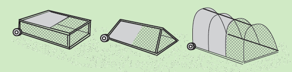

| Pasture Raised Chickens for Meat or Eggs For moveable outdoor pens, these roosters (for meat) could go under the house to be out of the hot sun and be safe from overhead predators. At night the ramp/door is closed and they are safe inside behind chicken wire and hardware cloth. For laying hens, boxes for egg laying need to be added. For winter, a pen like this could be moved into a greenhouse. Note: Moveable houses need wheels to make them easy to move. For fencing, use electric poultry netting and a solar charger. Chicken wire and posts take a lot of time to set up, are heavy to move and chickens can escape. After the roosters quickly tore up the grass in a soft wet clay soil area, I moved them to a drained gravely soil where they stayed for a month. Poultry netting kept them from flying out of the pen. They were fed greens from the garden plus grains. |
|||||||
| There are many creative ideas for raising meat chickens with pens that are moved along the ground so the chickens can eat pasture plants and bugs. See Joel Salatin, Polyface Farm or look on the internet for ideas.
Pens need to be easy to move (wheels), predator safe, have a protected area from sun or rain, area for water and feed, and large enough for the growing chickens. |
|||||||
|  | |||||||
| Home | |||||||